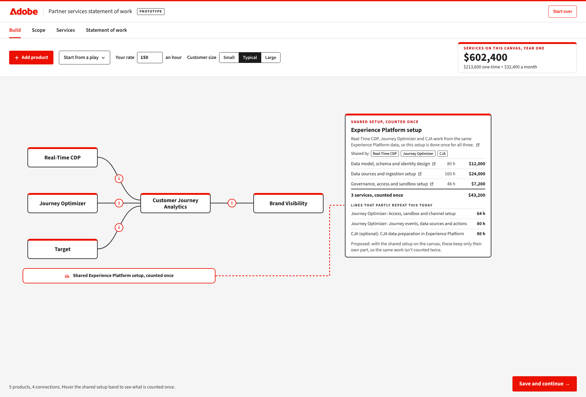

SHARED SETUP, COUNTED ONCE
Real-Time CDP, Journey Optimizer and CJA share one Experience Platform setup, so it counts once
A band under those products marks the shared setup; hover it to see the lines. Journey Optimizer's and CJA's own setup lines then keep only their own part, so the same work isn't counted twice.

The three shared lines and their hours come from the Experience League research; how the overlapping lines get split is the proposal.